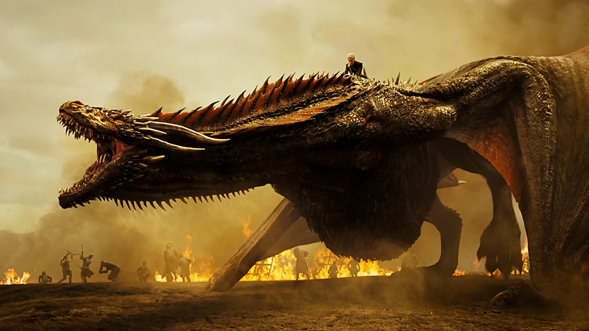
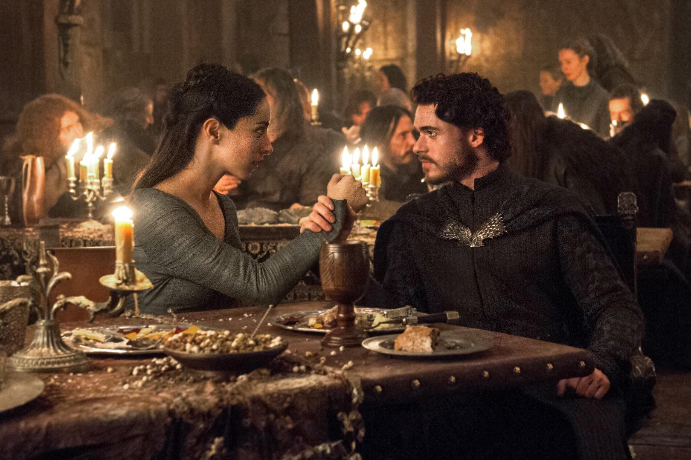
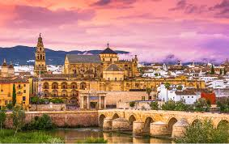

Embárcate en una aventura única con “España a través de los Siete Reinos”, una ruta temática inspirada en Juego de Tronos que te hará revivir la magia de la serie mientras descubres algunos de los rincones más espectaculares de España.
Vive la emoción de caminar por los mismo lugares que tus personajes favoritos y descubre la historia y la cultura que dieron vida a los Siete Reinos. ¡Una experiencia épica que ninguún fan debería perderse!


¿Por dónde disurre la Leyenda?
Tu aventura comienza aquí. Explora el recorrido por los escenarios de rodaje más espectaculares de España y empieza a soñar con tu próxima conquista.

Descubre España
como nunca antes
como nunca antes

Sevilla
Cáceres
Castellón
Gerona
Zumia